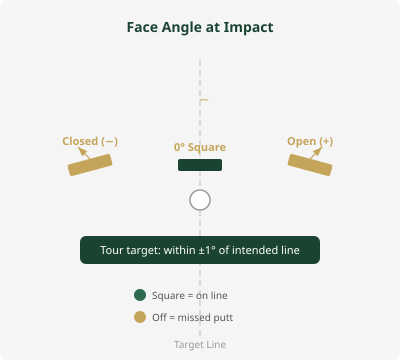
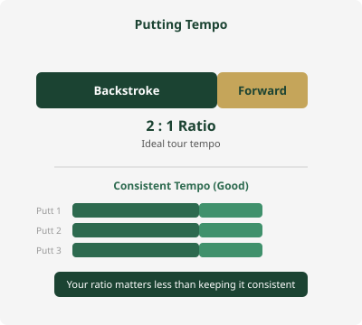
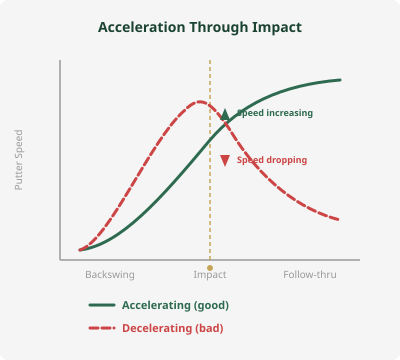
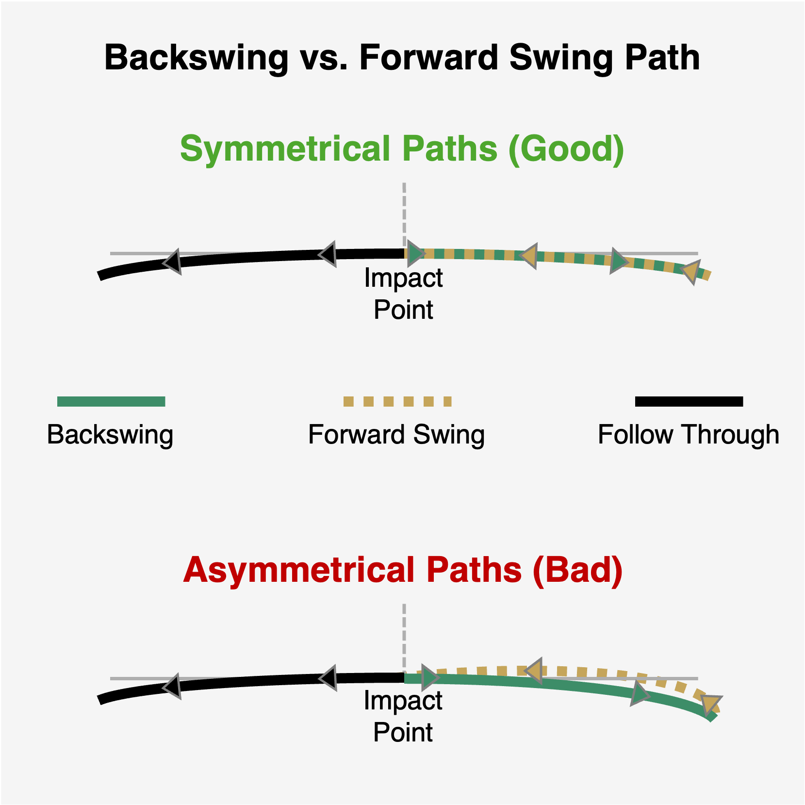
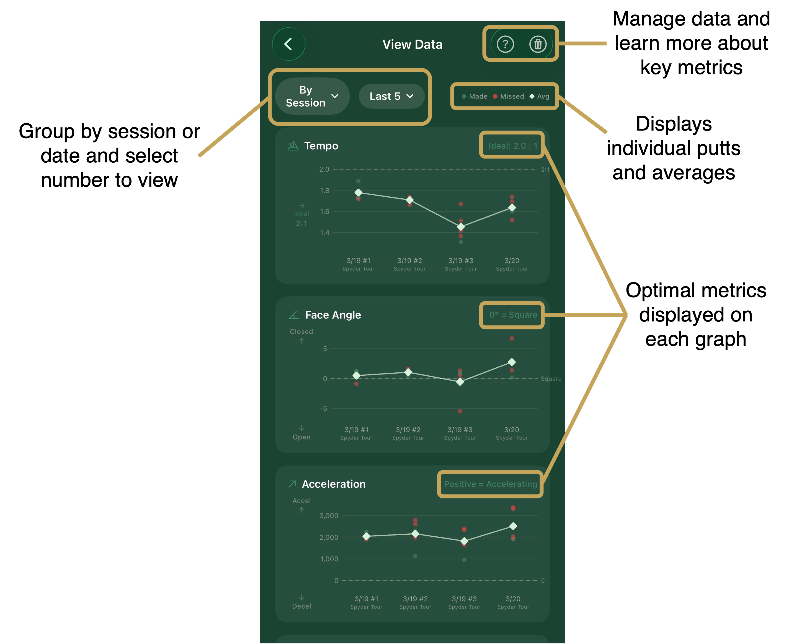

PuttrLab tracks five metrics that professional putting coaches use to evaluate stroke quality. Two are available in the free version, and three more unlock with PuttrLab Pro — giving you a complete view of what's happening in your stroke. Understanding these numbers — and what "good" looks like — is the first step to becoming a more consistent putter.
Free = included in the free app · Pro = unlocks with the one-time $19.99 PuttrLab Pro upgrade
The angle of your putter face relative to your target line at the moment of impact. Measured in degrees. A perfectly square face is 0°. A positive value means the face is open (pointing right for a right-handed golfer); a negative value means it is closed (pointing left).
Face angle at impact is the single biggest factor in determining the starting direction of your putt. Even 1–2° of error can send a 10-foot putt several inches offline — enough to miss. Consistency here is more important than perfection; if your face angle is consistently 1° open, you can adjust your aim. If it varies between 3° open and 2° closed, your misses will be unpredictable.
Tour-level putters typically deliver the face within ±1° of their intended line. For amateur golfers, getting consistently within ±2° is a strong starting point.

The timing relationship between your backstroke and forward stroke, measured as the ratio of backstroke time to forward stroke time. For example, a 2:1 tempo means your backstroke takes twice as long as your forward stroke.
Tempo is one of the most reliable indicators of a repeatable putting stroke. Tour professionals tend to have remarkably consistent tempo from putt to putt, regardless of distance. An inconsistent tempo often correlates with inconsistent speed control — the most important skill in putting.
Research on PGA Tour players has shown that most elite putters operate at roughly a 2:1 backstroke-to-forward-stroke tempo. This doesn't mean faster or slower is bad — what matters is that your personal tempo is consistent. PuttrLab helps you find your natural tempo and track whether you're maintaining it.

Whether your putter head is speeding up (accelerating) or slowing down (decelerating) as it passes through the impact zone. PuttrLab tracks putter head speed throughout the stroke and flags whether you are accelerating or decelerating at the moment of contact.
Decelerating through impact is one of the most common putting faults, especially under pressure. When you decelerate, you lose control of both direction and distance. The putter face is more likely to twist, and you'll consistently leave putts short. Accelerating smoothly through the ball produces a truer roll and more predictable distance.
You should be gently accelerating through impact on every putt. This doesn't mean hitting the ball harder — it means your stroke should be designed so that the putter is still gaining speed (even slightly) at the moment of contact. A shorter backswing with a smooth acceleration through the ball is far better than a long backswing with a deceleration.

A comparison of the arc path your putter follows during the backswing versus the arc path it follows during the forward swing. Rather than measuring length or distance, this metric evaluates how consistently the putter head traces the same curved path in both directions.
A symmetrical stroke path means your putter is following the same path back and through — a hallmark of a reliable, repeatable stroke. When the backswing arc and forward swing arc don't match, it means the putter is deviating off its natural path. For example, if you take the putter back on a tight arc but bring it forward on a much wider arc, the club face and path are fighting each other at impact. These mismatches lead to inconsistent contact, directional errors, and putts that don't start on your intended line.
You want the arc of your backswing and forward swing to mirror each other as closely as possible. A symmetrical path means the putter is traveling on a predictable, repeating path — which makes it far easier to deliver a square face at impact. The specific size of your arc (slight arc vs. strong arc) matters less than whether both halves of the stroke follow the same shape consistently.

Where on the putter face the ball was struck — measured as the distance from the center (sweet spot) toward the toe or heel of the putter. A perfectly centered strike is 0. Positive values indicate toe contact; negative values indicate heel contact.
Off-center contact is one of the most overlooked sources of inconsistent putting. A strike toward the toe or heel sends less energy into the ball, causing the putt to come up short, and it also imparts subtle twist on the putter face — pushing the ball offline even when your face angle and path were correct. Two putts with identical face angle and tempo can roll out very differently if one was struck on the sweet spot and the other was struck half an inch off.
Aim for contact as close to the center of the face as possible, with minimal variation from putt to putt. Consistent contact location matters more than perfection — if you tend to strike slightly toward the toe, you can adapt to it, but unpredictable contact makes distance control nearly impossible.
With PuttrLab Pro, every session is saved automatically. Tap View Data on the home screen to see your metrics graphed over time — sort by session or by date, dig into individual metrics, and spot what's actually causing you to make or miss putts. Each session is also paired with personalized coaching tips and drill recommendations based on your averages.

Knowing these numbers turns aimless putting practice into focused improvement. Instead of rolling 50 putts with no feedback, you can identify exactly what's off and work on the specific issue that's costing you strokes. Start with the free app — upgrade to Pro when you're ready for the full set of metrics, history, and personalized coaching.
Get Started with PuttrLab